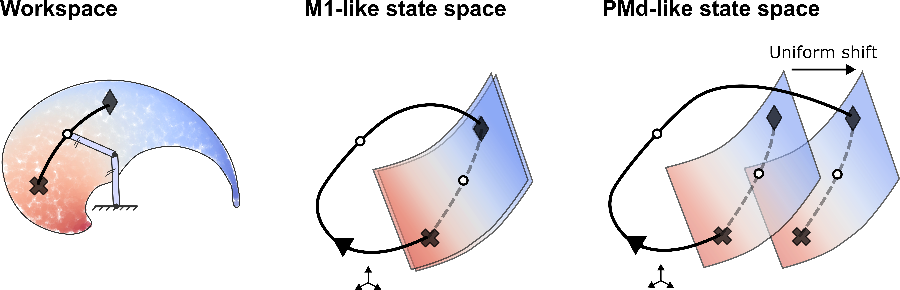
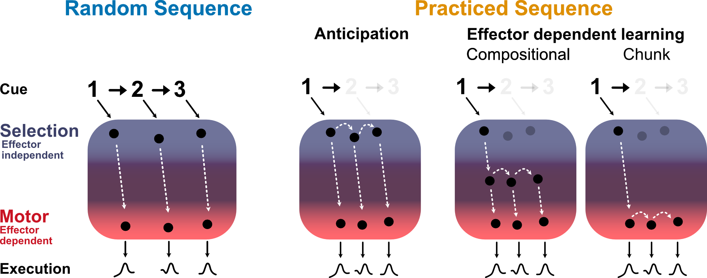
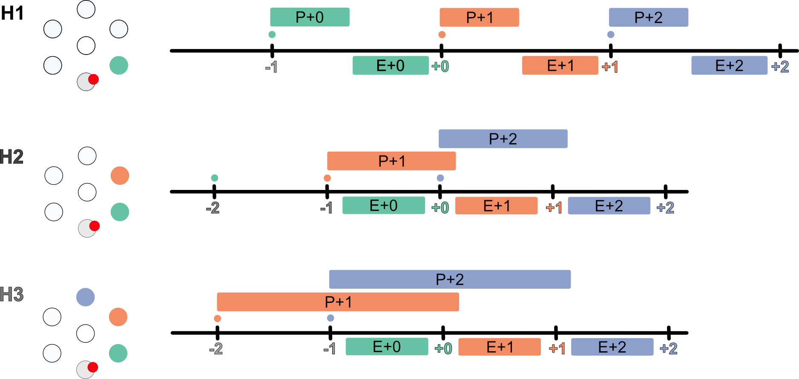

This work shows that the motor cortex generates voluntary movement via a three-part compositional neural dynamic: one component tracks arm position, another generates rotational patterns for transitions between positions, and a third tracks overall movement progression.
→ Preprint

Learning a sequential movement involves understanding both what to do and how to do it. This project introduces a paradigm that disentangles these often-intertwined components.
→ Paper

This study explores how humans adjust their planning of ongoing reaching movements when multiple upcoming movements are also known in advance.
→ Paper
→ Insight article by Raeed Chowdhury.
